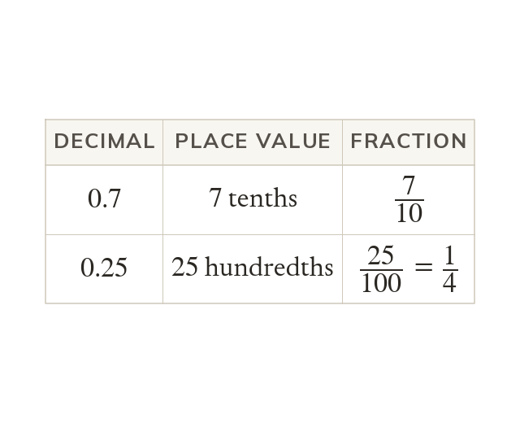

Place value gives the fraction
Read a decimal's place value to write its fraction: is
Divide numerator by denominator to get a decimal.
A decimal converts to a fraction by reading its place value, so is and is
A fraction converts to a decimal by dividing its numerator by its denominator.
A fraction converts to a decimal by dividing its numerator by its denominator.